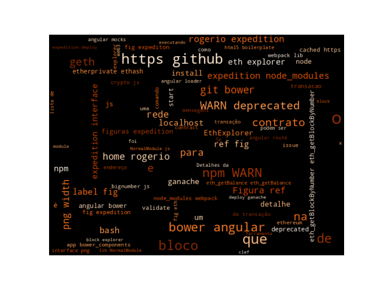

11 Prática sobre Instalação de Block Explorers Locais para as Redes de Testes
Instalando Block Explorers Locais para as Redes de Testes
11.1 Introdução
Block explorers são ferramentas que permitem a visualização dos dados de uma blockchain. Entre os navegadores para Ethereum, um dos mais conhecidos Etherscan entre outros:
Etherscan: Um block explorer no qual podemos buscar dados da rede principal do
Ethereum(mainnet) e de redes de teste (testnets).Beaconcha.in: Um block explorer open source no qual podemos buscar dados da rede principal do
Ethereum(mainnet) e de redes de teste (testnets).Blockchair: um Ethereum explorer privado.
Etherchain: um block explorer para a
Ethereum Mainnet.Ethplorer: um block explorer com foco em tokens para
Ethereum Mainnete a rede de testesKovan.Rantom: projeto open-source de visualizador de transações DeFi & NFT. https://github.com/noateden/rantom.
Para fins de desenvolvimento talvez uma ferramenta mais simples como o EthExplorer ou o expedition possa ajudar a visualizar transações, blocos na Rede Privada Local.
Encontramos uma versão mais atualizada que foi baseada no explorer, mas não funcionou na minha máquina, caso queira testar ETHExplorer V2.
Muitas outras opções podem ser vistas no link. Como o BlockScout que é um blockchain explorer open source para projetos baseados na EVM (Ethereum Virtual Machine) https://github.com/poanetwork/blockscout.
11.2 Instalando o EthExplorer
Para instalar o EthExplorer temos que fazer o download do projeto do repositório:
$ git clone https://github.com/etherparty/explorer
Cloning into 'explorer'...
remote: Enumerating objects: 269, done.
remote: Total 269 (delta 0), reused 0 (delta 0), pack-reused 269
Receiving objects: 100% (269/269), 59.61 KiB | 2.59 MiB/s, done.
Resolving deltas: 100% (139/139), done.
$ Ter instalado o Nodejs and npm.
Acessar o diretório explorer e iniciar o programa. Todas as dependências serão automaticamente instaladas. Como o projeto é bem antigo, muitas mensagens de componentes depreciados.
[explorer]$ npm start
> EthereumExplorer@0.1.0 prestart
> npm install
npm WARN EBADENGINE Unsupported engine {
npm WARN EBADENGINE package: 'karma@0.12.37',
npm WARN EBADENGINE required: { node: '>=0.8 <=0.12 || >=1 <=2' },
npm WARN EBADENGINE current: { node: 'v18.16.0', npm: '9.5.1' }
npm WARN EBADENGINE }
npm WARN deprecated natives@1.1.6: This module relies on Node.js's internals and will break at some point. Do not use it, and update to graceful-fs@4.x.
npm WARN deprecated source-map-url@0.4.1: See https://github.com/lydell/source-map-url#deprecated
npm WARN deprecated urix@0.1.0: Please see https://github.com/lydell/urix#deprecated
npm WARN deprecated cryptiles@2.0.5: This version has been deprecated in accordance with the hapi support policy (hapi.im/support). Please upgrade to the latest version to get the best features, bug fixes, and security patches. If you are unable to upgrade at this time, paid support is available for older versions (hapi.im/commercial).
npm WARN deprecated minimatch@2.0.10: Please update to minimatch 3.0.2 or higher to avoid a RegExp DoS issue
npm WARN deprecated resolve-url@0.2.1: https://github.com/lydell/resolve-url#deprecated
npm WARN deprecated source-map-resolve@0.5.3: See https://github.com/lydell/source-map-resolve#deprecated
npm WARN deprecated chokidar@1.7.0: Chokidar 2 will break on node v14+. Upgrade to chokidar 3 with 15x less dependencies.
npm WARN deprecated mkdirp@0.0.7: Legacy versions of mkdirp are no longer supported. Please update to mkdirp 1.x. (Note that the API surface has changed to use Promises in 1.x.)
npm WARN deprecated boom@2.10.1: This version has been deprecated in accordance with the hapi support policy (hapi.im/support). Please upgrade to the latest version to get the best features, bug fixes, and security patches. If you are unable to upgrade at this time, paid support is available for older versions (hapi.im/commercial).
npm WARN deprecated minimatch@0.3.0: Please update to minimatch 3.0.2 or higher to avoid a RegExp DoS issue
npm WARN deprecated minimatch@0.3.0: Please update to minimatch 3.0.2 or higher to avoid a RegExp DoS issue
npm WARN deprecated sntp@1.0.9: This module moved to @hapi/sntp. Please make sure to switch over as this distribution is no longer supported and may contain bugs and critical security issues.
npm WARN deprecated node-uuid@1.4.8: Use uuid module instead
npm WARN deprecated har-validator@1.8.0: this library is no longer supported
npm WARN deprecated hoek@2.16.3: This version has been deprecated in accordance with the hapi support policy (hapi.im/support). Please upgrade to the latest version to get the best features, bug fixes, and security patches. If you are unable to upgrade at this time, paid support is available for older versions (hapi.im/commercial).
npm WARN deprecated request@2.57.0: request has been deprecated, see https://github.com/request/request/issues/3142
npm WARN deprecated connect@2.30.2: connect 2.x series is deprecated
npm WARN deprecated hawk@2.3.1: This module moved to @hapi/hawk. Please make sure to switch over as this distribution is no longer supported and may contain bugs and critical security issues.
npm WARN deprecated ecstatic@0.4.13: This package is unmaintained and deprecated. See the GH Issue 259.
npm WARN deprecated log4js@0.6.38: 0.x is no longer supported. Please upgrade to 6.x or higher.
npm WARN deprecated protractor@2.5.1: We have news to share - Protractor is deprecated and will reach end-of-life by Summer 2023. To learn more and find out about other options please refer to this post on the Angular blog. Thank you for using and contributing to Protractor. https://goo.gle/state-of-e2e-in-angular
> EthereumExplorer@0.1.0 postinstall
> bower install
bower angular-loader#~1.4.0 cached https://github.com/angular/bower-angular-loader.git#1.4.14
bower angular-loader#~1.4.0 validate 1.4.14 against https://github.com/angular/bower-angular-loader.git#~1.4.0
bower html5-boilerplate#~5.2.0 cached https://github.com/h5bp/html5-boilerplate.git#5.2.0
bower html5-boilerplate#~5.2.0 validate 5.2.0 against https://github.com/h5bp/html5-boilerplate.git#~5.2.0
bower angular-route#~1.4.0 cached https://github.com/angular/bower-angular-route.git#1.4.14
bower angular-route#~1.4.0 validate 1.4.14 against https://github.com/angular/bower-angular-route.git#~1.4.0
bower angular-mocks#~1.4.0 cached https://github.com/angular/bower-angular-mocks.git#1.4.14
bower angular-mocks#~1.4.0 validate 1.4.14 against https://github.com/angular/bower-angular-mocks.git#~1.4.0
bower angular-bootstrap#~0.13.3 cached https://github.com/angular-ui/bootstrap-bower.git#0.13.4
bower angular-bootstrap#~0.13.3 validate 0.13.4 against https://github.com/angular-ui/bootstrap-bower.git#~0.13.3
bower web3#~0.14.0 cached https://github.com/ethereum/ethereum.js.git#0.14.0
bower web3#~0.14.0 validate 0.14.0 against https://github.com/ethereum/ethereum.js.git#~0.14.0
bower angular#~1.4.0 cached https://github.com/angular/bower-angular.git#1.4.14
bower angular#~1.4.0 validate 1.4.14 against https://github.com/angular/bower-angular.git#~1.4.0
bower angular#>=1.3.0 cached https://github.com/angular/bower-angular.git#1.8.3
bower angular#>=1.3.0 validate 1.8.3 against https://github.com/angular/bower-angular.git#>=1.3.0
bower crypto-js#~3.1.4 cached https://github.com/brix/crypto-js.git#3.1.9
bower crypto-js#~3.1.4 validate 3.1.9 against https://github.com/brix/crypto-js.git#~3.1.4
bower bignumber.js#>=2.0.0 cached https://github.com/MikeMcl/bignumber.js.git#9.1.2
bower bignumber.js#>=2.0.0 validate 9.1.2 against https://github.com/MikeMcl/bignumber.js.git#>=2.0.0
bower angular-bootstrap#~0.13.3 install angular-bootstrap#0.13.4
bower html5-boilerplate#~5.2.0 install html5-boilerplate#5.2.0
bower angular-loader#~1.4.0 install angular-loader#1.4.14
bower angular-route#~1.4.0 install angular-route#1.4.14
bower angular-mocks#~1.4.0 install angular-mocks#1.4.14
bower web3#~0.14.0 install web3#0.14.0
bower angular#1.4.14 install angular#1.4.14
bower bignumber.js#>=2.0.0 install bignumber.js#9.1.2
bower crypto-js#~3.1.4 install crypto-js#3.1.9
angular-bootstrap#0.13.4 app/bower_components/angular-bootstrap
|-- angular#1.4.14
html5-boilerplate#5.2.0 app/bower_components/html5-boilerplate
angular-loader#1.4.14 app/bower_components/angular-loader
|-- angular#1.4.14
angular-route#1.4.14 app/bower_components/angular-route
|-- angular#1.4.14
angular-mocks#1.4.14 app/bower_components/angular-mocks
|-- angular#1.4.14
web3#0.14.0 app/bower_components/web3
|-- bignumber.js#9.1.2
|-- crypto-js#3.1.9
angular#1.4.14 app/bower_components/angular
bignumber.js#9.1.2 app/bower_components/bignumber.js
crypto-js#3.1.9 app/bower_components/crypto-js
added 454 packages, and audited 455 packages in 28s
41 packages are looking for funding
run `npm fund` for details
61 vulnerabilities (2 low, 9 moderate, 38 high, 12 critical)
To address issues that do not require attention, run:
npm audit fix
To address all issues (including breaking changes), run:
npm audit fix --force
Run `npm audit` for details.
> EthereumExplorer@0.1.0 start
> http-server ./app -a localhost -p 8000 -c-1
Starting up http-server, serving ./app on port: 8000
Hit CTRL-C to stop the serverO EthExplorer estará executando no endereço http://localhost:8000 do seu navegador. Se a mensagem de erro for exibida, conforme na Figura \(\ref{eth:explorer:001}\).
Nas versões atuais do geth, temos que usar o parâmetro --http.corsdomain="http://localhost:8000" na inicialização do geth e dar um refresh na página.
11.3 Executando o geth para aceitar conexão do EthExplorer
Para aceitar conexões do EthExplorer inicie o cliente de execução geth. Voltando à Prática sobre Ferramentas de Desenvolvimento e Frameworks Ethereum: Introdução ao Web3, podemos usar os comandos que utilizamos para criar a infraestrutura da Rede Privada Local.
Minha instalação da geth está em $HOME/go-ethereum-1.11.6/build/bin/ então lembre-se de colocar o prefixo do local da sua instalação antes de cada um dos comandos.
- Iniciar
clefem um terminal. O comando para o console doclef:
[.etherprivate-ethash]$ $HOME/go-ethereum-1.11.6/build/bin/clef --chainid 786 --keystore $HOME/.etherprivate-ethash/keystore --configdir $HOME/.etherprivate-ethash/clef --http- Iniciar o cliente de execução
geth, o comando para o console dogeth. Alteramos a porta para--http.port 8545, pois aappdoEthExplorerestá configurada com esse endereço, mas caso queira pode editar o arquivoexplorer/app/app.jse trocar a porta para8559que foi o número utilizado na prática na qual criamos a Rede Privada Local. É necessário colocar o parâmetro--http.corsdomain="http://localhost:8000", pois será iniciado um servidor nesse endereço que oEthExplorerirá responder e é preciso que tenha permissão acesso aogeth(mesmo parâmetro que utilizamos com o Remix IDE).
[.etherprivate-ethash]$ $HOME/go-ethereum-1.11.6/build/bin/geth --networkid 786 --datadir ~/.etherprivate-ethash/ --syncmode full --allow-insecure-unlock --identity "RAGEtherPrivate" --http --http.addr 127.0.0.1 --http.port 8545 --http.api "eth,net,web3,personal,engine,admin,debug,miner,txpool" --http.corsdomain="http://localhost:8000" --vmdebug --keystore ~/.etherprivate-ethash/keystore --authrpc.addr localhost --authrpc.port 8551 --authrpc.vhosts localhost --authrpc.jwtsecret ~/.etherprivate-ethash/geth/jwtsecret --nodiscover --maxpeers 15 --miner.etherbase=0x2db017e44b03b37755a4b15e14cd799f83de4c13 --signer=$HOME/.etherprivate-ethash/clef/clef.ipcO comando para o console do
prysm: Não precisa! Estamos usando a versão1.11.6-stable-ea9e62caque ainda suporta oethash, algoritmo de consenso Proof-of-Work (PoW).Iniciar um console
JavaScriptpara a interação com a instância de execução dogeth:
[.etherprivate-ethash]$ $HOME/go-ethereum-1.11.6/build/bin/geth attach $HOME/.etherprivate-ethash/geth.ipc
Welcome to the Geth JavaScript console!
instance: Geth/RAGEtherPrivate/v1.11.6-stable-ea9e62ca/linux-amd64/go1.21.1
coinbase: 0x2db017e44b03b37755a4b15e14cd799f83de4c13
at block: 0 (Wed Dec 31 1969 21:00:00 GMT-0300 (-03))
datadir: /home/rogerio/.etherprivate-ethash
modules: admin:1.0 debug:1.0 engine:1.0 eth:1.0 ethash:1.0 miner:1.0 net:1.0 rpc:1.0 txpool:1.0 web3:1.0
To exit, press ctrl-d or type exit
> Pelo console javascript vamos fazer uma transação e verificar se aparece no EthExplorer.
> eth.accounts
["0x2db017e44b03b37755a4b15e14cd799f83de4c13", "0x7a7686ad451d2865a2246e239b674aefd4c6c27c", "0x1bba02873cc1c11f369a7b692f5f3de8ff7bbe80"]
> eth.getBalance(eth.accounts[0])
2.47580000000000003e+22
> eth.getBalance(eth.accounts[1])
0
> eth.sendTransaction({from: "0x2db017e44b03b37755a4b15e14cd799f83de4c13", to: "0x7a7686ad451d2865a2246e239b674aefd4c6c27c", value: 100})
"0xfc51e58d68da7e96cedae5d21da4df73311739ff34200cb32952b7b419b07665"
> As mensagens de confirmação aparecem no console do clef e a submissão da transação aparece no console do geth:
INFO [10-27|17:19:43.727] Submitted transaction hash=0xfc51e58d68da7e96cedae5d21da4df73311739ff34200cb32952b7b419b07665 from=0x2db017E44b03B37755A4b15e14Cd799f83DE4c13 nonce=30 recipient=0x7A7686aD451d2865A2246E239B674aeFd4c6c27c value=100Se buscarmos no EthExplorer os detalhes da transação via url http://localhost:8000/#/transaction/0xfc51e58d68da7e96cedae5d21da4df73311739ff34200cb32952b7b419b07665 ou consultando pela interface, teremos os detalhes conforme Figura 11.I.
No console javascript podemos verificar que a transação foi confirmada:
> miner.start()
null
> eth.getBalance(eth.accounts[0])
2.47980000000000002999e+22
> eth.getBalance(eth.accounts[1])
100
> miner.stop()
null
> E na interface do EthExplorer após a mineração aparece mais detalhes sobre a confirmação, como bloco que ela foi incluída entre outras informações. A Figura 11.II apresenta esses detalhes.
Outras transações e blocos podem ser consultados, a Figura 11.III apresenta uma lista de todos os blocos que foram criados desde que iniciamos a rede.
Se quisermos consultar um bloco específico como o \(12403\) basta clicar e os detalhes do bloco serão apresentados http://localhost:8000/#/block/12403. A Figura 11.IV apresenta as informações do bloco \(12403\).
11.4 Instalando o Expediton
Para instalar o Expedition temos que fazer o download do projeto do repositório:
$ git clone https://github.com/xops/expedition.git && cd expedition && npm install
$ git clone https://github.com/xops/expedition.git && cd expedition
Cloning into 'expedition'...
remote: Enumerating objects: 2687, done.
remote: Counting objects: 100% (211/211), done.
remote: Compressing objects: 100% (107/107), done.
remote: Total 2687 (delta 113), reused 177 (delta 93), pack-reused 2476
Receiving objects: 100% (2687/2687), 29.66 MiB | 24.79 MiB/s, done.
Resolving deltas: 100% (1577/1577), done.
[expedition]$ npm install
... Após a execução do npm install execute um npm start para iniciar a aplicação. Se ao executar o npm start a mensagem de erro aparecer:
Starting the development server...
Error: error:0308010C:digital envelope routines::unsupported
at new Hash (node:internal/crypto/hash:71:19)
at Object.createHash (node:crypto:133:10)
at module.exports (/home/rogerio/expedition/node_modules/webpack/lib/util/createHash.js:135:53)
at NormalModule._initBuildHash (/home/rogerio/expedition/node_modules/webpack/lib/NormalModule.js:417:16)
at handleParseError (/home/rogerio/expedition/node_modules/webpack/lib/NormalModule.js:471:10)
at /home/rogerio/expedition/node_modules/webpack/lib/NormalModule.js:503:5
at /home/rogerio/expedition/node_modules/webpack/lib/NormalModule.js:358:12
at /home/rogerio/expedition/node_modules/loader-runner/lib/LoaderRunner.js:373:3
at iterateNormalLoaders (/home/rogerio/expedition/node_modules/loader-runner/lib/LoaderRunner.js:214:10)
at iterateNormalLoaders (/home/rogerio/expedition/node_modules/loader-runner/lib/LoaderRunner.js:221:10)
/home/rogerio/expedition/node_modules/react-scripts/scripts/start.js:19
throw err;
^
Error: error:0308010C:digital envelope routines::unsupported
at new Hash (node:internal/crypto/hash:71:19)
at Object.createHash (node:crypto:133:10)
at module.exports (/home/rogerio/expedition/node_modules/webpack/lib/util/createHash.js:135:53)
at NormalModule._initBuildHash (/home/rogerio/expedition/node_modules/webpack/lib/NormalModule.js:417:16)
at /home/rogerio/expedition/node_modules/webpack/lib/NormalModule.js:452:10
at /home/rogerio/expedition/node_modules/webpack/lib/NormalModule.js:323:13
at /home/rogerio/expedition/node_modules/loader-runner/lib/LoaderRunner.js:367:11
at /home/rogerio/expedition/node_modules/loader-runner/lib/LoaderRunner.js:233:18
at context.callback (/home/rogerio/expedition/node_modules/loader-runner/lib/LoaderRunner.js:111:13)
at /home/rogerio/expedition/node_modules/babel-loader/lib/index.js:59:103 {
opensslErrorStack: [ 'error:03000086:digital envelope routines::initialization error' ],
library: 'digital envelope routines',
reason: 'unsupported',
code: 'ERR_OSSL_EVP_UNSUPPORTED'
}
Node.js v18.16.0Com a versão \(18\) do Node.js é necessário executá-lo no modo Legacy OpenSSL Provider. Em sistemas Unix-like (Linux, macOS, Git bash, etc.):
export NODE_OPTIONS=--openssl-legacy-providerNo Windows execute o comando:
set NODE_OPTIONS=--openssl-legacy-providerNo PowerShell:
$env:NODE_OPTIONS = "--openssl-legacy-provider"Neste link apresentam a solução acima ou essa alternativa de alterar a linha no package.json:
"start": "react-scripts start"para
"start": "react-scripts --openssl-legacy-provider start"Executando novamente o npm start, se tudo estiver certo, irá aparecer algumas mensagens que indicam a inicialização com sucesso.
Compiled successfully!
You can now view @xops.net/expedition in the browser.
Local: http://localhost:3000
On Your Network: http://192.168.100.200:3000
Note that the development build is not optimized.
To create a production build, use npm run build.Uma janela do navegador será aberta com a aplicação executando no endereço http://localhost:3000, conforme a Figura 11.V, note que a rede Ethereum Classic é acessada por padrão.
Podemos passar o endereço que o geth está executando como parâmetro na URL do Expedition http://localhost:3000/?rpcUrl=http://localhost:8545 ou configurar na interface uma rede que queiramos acessar. A Figura 11.VI mostra a configuração da rede RAGEtherPrivate.
Se nada foi listado ainda é porque precisamos alterar no geth a porta para \(3000\) no parâmetro --http.corsdomain="http://localhost:3000" que é o endereço o expedition está executando. Alterando e dando um refresh na página, a lista de blocos irá aparecer. A Figura 11.VII apresenta essa lista e outras informações e estatísticas.

O bloco \(9239\) que foi criado na execução do exemplo com o EthExplorer pode ser visto conforme Figura 11.VIII.
Detalhes da transação 0x0593c93b89d1a721a6e9e552be728d6c5d24eea3aee88d748962a0d0f3b8c75a podem ser vistos no link também podem ser consultados pela interface, conforme Figura 11.IX.
11.5 Explorando a Rede Simulada do Ganache
Outras redes como a rede simulada criada pelo Ganache também podem ser listadas nas ferramentas que testamos. Basta estarem executando no endereço http://127.0.0.1:8545.
[.etherprivate]$ ganache
ganache v7.9.1 (@ganache/cli: 0.10.1, @ganache/core: 0.10.1)
Starting RPC server
Available Accounts
==================
(0) 0xf506254EEc6DC942F6252Cad40A83Ac418fd3A14 (1000 ETH)
(1) 0x8272bf218f5D680fc25A4173D794C60b99400D66 (1000 ETH)
(2) 0xbf90716A9C0e681D295ca5DF021f720142D6A3E5 (1000 ETH)
(3) 0x2B19d0dac3D484f4c0612fEF290fD96259f568Ec (1000 ETH)
(4) 0xe416BbCEf87CCEeA2a589efA14120AdAec67C182 (1000 ETH)
(5) 0xCf18bbb47b083A9ace4DaFF928dD6d8366Ac2EC6 (1000 ETH)
(6) 0xB5d187155873DE07f64F37566CAe457a875E8F43 (1000 ETH)
(7) 0x4093D6EC637d3c694DE5ca56c984c4BB53af3B71 (1000 ETH)
(8) 0x6A7e6fF348eDBc54E064f9060668C7893a617c54 (1000 ETH)
(9) 0x878846a2b52F23fAd641ba5Bbc913A182E1ab95D (1000 ETH)
Private Keys
==================
(0) 0xcf81d5f3f342a58e42f56b344848c2251d161a3d0e9bbb23b78d1b80b34b599f
(1) 0x918036840355447ae31c7b52b5c419c445aba829a95c362f39a6344024953f1a
(2) 0xa2eab71037cc5f2e28da4ad01fcf4011b328b49fdb74bff85b32f289759fcc1c
(3) 0x2a1a0599e632b781a5d95a6597d6efffd7d5889f50cebc3fd6ffda96461e8138
(4) 0x287197339dcb654a3def534b8d236a57ebac9ec23d292fc8da1e0fd850b9144a
(5) 0xdca2a49558a5e0f0f4c1f1a8690b46f06fc26d1b79e3b71ffde3b9a2f8350575
(6) 0xf8de1334a8cb7cdcda4719d2901ed0938370f1716c07c2b9658799a6e542b156
(7) 0x674824f463e9ac5ba07afd784e40e64c5e1644dbc8d5882826b4c99d3b2c46d2
(8) 0xcb18be5def077c679044e6eb44252e12e265226f5903ef3d8e56b295dd06ad46
(9) 0xa8a29a37ebffcb0edf77bd8827ae2593903ea365956307e12b67c14c12c6d066
HD Wallet
==================
Mnemonic: news frequent bless rotate garlic brave endless crawl inject recall pond outdoor
Base HD Path: m/44'/60'/0'/0/{account_index}
Default Gas Price
==================
2000000000
BlockGas Limit
==================
30000000
Call Gas Limit
==================
50000000
Chain
==================
Hardfork: shanghai
Id: 1337
RPC Listening on 127.0.0.1:8545Note que o endereço e porta utilizados pela rede simulada do Ganache (http://127.0.0.1:8545) é o mesmo que está sendo monitorado pelo Expedition. Ao iniciar o monitoramento percebam que no console do Ganache aparecem mensagens de sincronização.
eth_blockNumber
eth_getBlockByNumber
eth_getBlockByNumber
eth_getBlockByNumber
eth_syncing
eth_syncing
eth_blockNumber
eth_chainId
net_peerCount
eth_gasPrice
{mensagens suprimidas}Vamos fazer o deploy do contrato utilizando a Remix IDE, lembre-se de configurar na opção “Deploy and run transactions” o ambiente como sendo o “Dev - Ganache Provider”. O Código 11.I apresenta conteúdo do contrato.
// SPDX-License-Identifier: MIT
pragma solidity ^0.8.21;
contract Addition {
uint8 x;
function addx(uint8 y, uint8 z ) public {
x = y + z;
}
function retrievex() view public returns (uint8) {
return x;
}
}Editando o contrato na Remix IDE conforme a Figura 11.X.
Compilando e fazendo o deploy conforme [Figura Figure 11.XI} podemos ver que outras mensagens aparecem no _console do Ganache.
Note que a transação de criação do contrato foi submetida hash 0x379837e1a5ff892111664124c7c18df632744f17fbd462103709721b0bd6c469.
{mensagens suprimidas}
eth_accounts
net_version
eth_estimateGas
eth_getBlockByNumber
eth_gasPrice
eth_sendTransaction
Transaction: 0x379837e1a5ff892111664124c7c18df632744f17fbd462103709721b0bd6c469
Contract created: 0x40b3ff3cdaef2962289ea615a852ed41e41f82aa
Gas usage: 157683
Block number: 1
Block time: Mon Oct 30 2023 10:41:20 GMT-0300 (Horário Padrão de Brasília)
eth_syncing
net_version
eth_getTransactionReceipt
eth_getTransactionReceipt
eth_getTransactionByHash
eth_getCode
eth_getTransactionByHash
eth_getBalance
eth_getTransactionReceipt
eth_getBalance
eth_getBalance
eth_getBalance
eth_getBalance
eth_getBalance
eth_getBalance
eth_getBalance
eth_getBalance
eth_getBalance
eth_syncing
eth_blockNumber
eth_getBlockByNumber
eth_getBlockByNumber
eth_getBlockByNumber
eth_getBlockByNumber
eth_getBlockByNumber
eth_blockNumber
eth_getBlockByNumber
eth_getBlockByNumber
eth_getBlockByNumber
eth_getBlockByNumber
eth_getBlockByNumber
eth_getBlockByNumberNa interface do Expedition podemos ver que o bloco de id \(1\) tem a transação de criação do contrato. A Figura 11.XII apresenta a lista de blocos criados.
O Código apresentado na figura anterior confere com o código da interface no Remix IDE conforme Figura 11.XIII.
Detalhes da transação de criação do contrato podem ser vistos na Figura 11.XIV.
No console do Ganache podemos ver que a transação foi submetida.
{mensagens de sincronização suprimidas}
net_version
eth_accounts
net_version
eth_estimateGas
eth_getBlockByNumber
eth_gasPrice
eth_sendTransaction
Transaction: 0x308d26670e093cb9ee1aa241617680a62f07c932c6a12cdf0b98afebc3e45ef1
Gas usage: 44269
Block number: 2
Block time: Mon Oct 30 2023 10:43:43 GMT-0300 (Horário Padrão de Brasília)
net_version
eth_getTransactionReceipt
eth_getTransactionReceipt
eth_getTransactionByHash
eth_getTransactionByHash
eth_getBalanceAo executarmos uma chamada à função add do contrato um outro bloco é criado com a transação, a Figura 11.XV.
E os detalhes da transação de chamada da função add do contrato podem ser vistos na Figura 11.XVI.
11.6 Considerações Finais
Estas foram duas ferramentas que podem ser utilizadas na visualização de blocos, transações que executamos no nosso ambiente de teste local, com a Rede Privada Local que criamos lá nas aulas sobre redes de testes e com redes simuladas como a que é criada pelo Ganache.
11.7 Leitura Recomendada
Capítulo 15: Introducing Web3
12 Word Cloud
